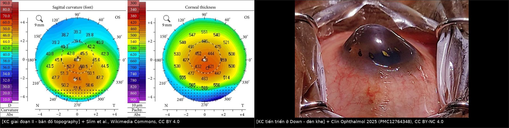
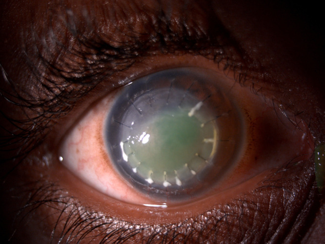
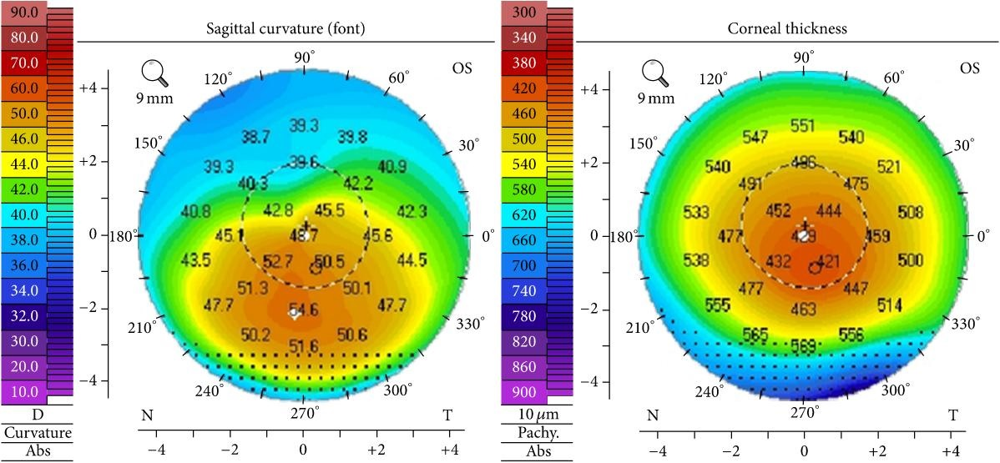
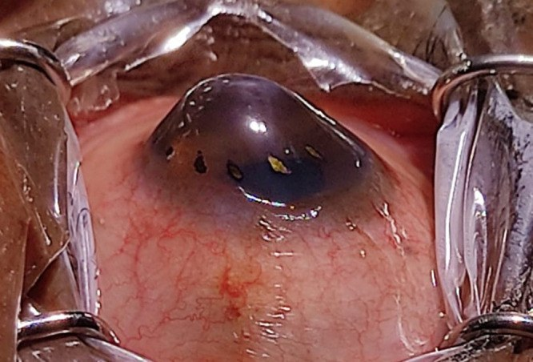
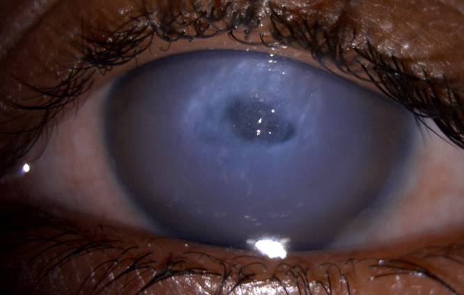

1414 — Keratoconus ở trẻ Down syndrome: sàng lọc bằng tomography, ngưỡng "bình thường" riêng của nhóm, chỉ định CXL và giới hạn của ghép giác mạc / Keratoconus in Down syndrome: tomography screening, population-specific thresholds, CXL and the limits of keratoplasty
Tags: pattern:ectasia-giac-mac pattern:loi-khuc-xa-khong-deu vung:mat vung:giac-mac score:BAD-D score:Belin-ABCD protocol:tomography-giac-mac protocol:CXL incidentaloma:keratoconus-tre
Mức chắc chắn (certainty): tổng hợp y văn (literature synthesis) — tự biên từ chương trình sàng lọc 27 trẻ Down 9–18 tuổi (54 mắt) (PMC11941047, CC BY 4.0), tổng quan tự sự keratoconus ở Down (PMC12764348, CC BY-NC 4.0), đồng thuận ERN-EYE 2026 về keratoconus trẻ em (PMC13518778, CC BY-NC 4.0) và nghiên cứu độ lặp lại của Pentacam ở nhóm Down (PMC12612933). Chưa gắn một ca nguyên văn đơn lẻ.
Bài này là phần "đo và quyết định" của 1412 – Đo khúc xạ lý liệt ở trẻ Down/bại não/tự kỷ. 1412 đã chốt khúc xạ lý liệt (thuốc nào, kỹ thuật nào) và chỉ ra 15% mắt trẻ Down 9–18 tuổi đã có keratoconus sớm; bài này trả lời phần còn trống: đo bằng thông số nào, ngưỡng nào là "bất thường" ở một giác mạc vốn đã mỏng–dốc, khi nào đủ chắc để CXL, và vì sao ghép giác mạc ở nhóm này là phương án cuối.
Câu chốt: Ở trẻ Down syndrome, giác mạc "bình thường" của nhóm đã giống keratoconus của người khác: CCT 479 µm vs 536 µm và Kmax 49,2 D vs 45,8 D so với chứng cùng tuổi (p < 0,01), BAD-D trung bình của cả nhóm sàng lọc là 2,5** — vượt ngưỡng **BAD-D > 1,6 mà chính chương trình dùng để sàng lọc (PMC11941047). Vì vậy không được chẩn đoán keratoconus vì một tham số bất thường: chương trình này chỉ gọi keratoconus sớm khi ≥ 3 tham số bất thường trong bộ zonal Kmax > 48 D · IS > 1,4 · BAD-D > 1,6 · độ cao bề mặt sau > 10 µm tại điểm mỏng nhất, rồi hội chẩn với bác sĩ giác mạc. Chốt cuối cùng vẫn là thay đổi THEO THỜI GIAN trên cùng một máy cộng với dấu hiệu lâm sàng.
1. Tổng quan bệnh học – cơ chế hình ảnh
- Vì sao giác mạc Down khác về bản chất, không chỉ "khó đo": trisomy 21 kèm bất thường collagen và chất nền ngoại bào (giảm tổng collagen, giảm độ cứng, tăng mật độ mô) → giác mạc mỏng hơn, dốc hơn, loạn thị không đều hơn ngay từ đầu. Số liệu đối chứng cùng tuổi: CCT 479 µm (95% CI 455–502) vs 536 µm (532–542), Kmax 49,2 D (47,7–50,6) vs 45,8 D (45,6–46), K1 45,2 vs 42,3 D, K2 47,3 vs 45,1 D; loạn thị trung bình lại thấp hơn (2,1 vs 2,8 D, p = 0,3) — nghĩa là dốc không đồng nghĩa loạn thị đều (PMC11941047).
- Vì sao BAD-D của nhóm này bị "thổi" — vật lý của phép đo: tomography Scheimpflug dựng bề mặt trước và sau rồi so với mặt cầu/quy chiếu tốt nhất (best-fit sphere); BAD-D (Belin–Ambrósio Display total deviation) là độ lệch chuẩn hóa so với cơ sở dữ liệu người bình thường — mà cơ sở dữ liệu đó không phải người Down. Một giác mạc mỏng–dốc bẩm sinh sẽ có độ lệch cao dù không ectasia. Hệ quả thực hành: BAD-D trung bình 2,5 ở cả 54 mắt sàng lọc, tức vượt ngưỡng 1,6 ở phần lớn mắt "không keratoconus" → dương tính giả hàng loạt nếu dùng ngưỡng người lớn (PMC11941047).
- Vì sao bề mặt SAU là chốt sớm: lớp nhu mô sau mỏng hơn và chịu ít lực hơn lớp trước; trong ectasia, độ cao bề mặt sau (posterior elevation) và ART-max (Ambrosio relational thickness) lệch trước khi Kmax thay đổi rõ. Đây là lý do một bài toán chỉ nhìn Kmax sẽ bỏ sót giai đoạn sớm — đúng cảnh báo của đồng thuận trẻ em: thay đổi 1 D Kmax là tiêu chuẩn kém (PMC13518778).
- Cơ chế tiến triển — hai lực đẩy cùng lúc: (1) yếu cấu trúc (collagen/độ cứng); (2) tải cơ học lặp lại do dụi mắt. Trong đoàn hệ sàng lọc, 30% trẻ dụi mắt, 26% có viêm mũi dị ứng/atopy, 11% hen, 11% eczema (PMC11941047). Dụi mắt là yếu tố duy nhất can thiệp được bằng hành vi — và ở trẻ Down, dụi mắt thường không được báo vì trẻ không nói được.
- Vì sao chẩn đoán muộn là quy luật: trẻ Down không mô tả được "nhìn mờ tiến triển", lại có tật khúc xạ nền rất cao (loạn thị 70,3% trong 148 trẻ — PMC12094766) nên giảm thị lực bị quy cho "độ kính". Kết quả là keratoconus ở Down thường đến ở giai đoạn trung bình–nặng, khi CXL đã quá muộn.
- Tần suất — dải số phải nhớ: tổng quan ghi 0–71%, trong đó nghiên cứu topography 10–30%; sổ bộ Norway 5,5% (≈ 30 lần dân số chung), Brazil 27,2% trong 1.207 người Down, trong khi một nghiên cứu 123 trẻ Down châu Á không tìm thấy ca nào (PMC12764348). Sự phân tán này không phải mâu thuẫn — nó phản ánh tiêu chuẩn chẩn đoán và tuổi: sàng lọc chủ động ở tuổi thiếu niên tìm được 15% mắt (8/54) và 19% trẻ (5/27), tuổi trung bình 13,8 (9–18), và 8 mắt được chỉ định CXL, 0 ca phải ghép (PMC11941047).
- Vì sao phải chặn tiến triển chứ không "đợi ghép": ghép giác mạc ở Down có sống ghép 67–85% so với 90–95% ở người không Down; các loạt nhỏ ghi 3/18 mắt phải ghép lại, 4/5 bệnh nhân bị thải ghép lặp, và chỉ 2 mắt còn trong > 2 năm trong một loạt 1997 (PMC12764348). Nguyên nhân: dụi mắt làm bung chỉ, viêm bờ mi → nhiễm mảnh ghép, khó theo dõi nhãn áp/đáy mắt nếu không gây mê. Vì vậy CXL sớm là chiến lược rẻ và an toàn hơn ghép, không phải "phương án nhẹ".
2. Mẫu hình + chẩn đoán phân biệt theo hình thái (gamut)
- Hình thái 1 — "dốc–mỏng ĐỐI XỨNG, không tiến triển" = nền của nhóm Down: Kmax ~49 D, CCT ~479 µm, không lệch khu trú, không thay đổi khi chụp lại 6–12 tháng. Đây là biến thể của nhóm, không phải bệnh.
- Hình thái 2 — keratoconus sớm: dốc/lồi KHU TRÚ dưới–mũi (inferior–nasal), độ cao bề mặt sau tăng, ART-max giảm, BAD-D tăng so với chính nó ở lần trước; đèn khe có thể chưa có vòng Fleischer.
- Hình thái 3 — keratoconus tiến triển: hình nón lồi rõ, vòng Fleischer, đường Vogt, dấu Munson, loạn thị không đều không chỉnh được bằng kính; Kmax tăng > 1 D/năm hoặc loạn thị tăng > 1 D/năm (định nghĩa dùng trong đoàn hệ sàng lọc — PMC11941047).
- Hình thái 4 — tràn dịch giác mạc cấp (acute corneal hydrops): phù nhu mô trung tâm, mờ đục, rách màng Descemet, khởi phát đau–chảy nước mắt–giảm thị lực đột ngột; ở trẻ Down dễ bị chẩn đoán nhầm viêm kết mạc/viêm giác mạc.
- Hình thái 5 — sẹo sau tràn dịch: sẹo nhu mô trung tâm sau khi hydrops lành; đây là lý do phải theo dõi lâu chứ không chỉ "hết đau là xong".
- Hình thái 6 — keratoglobus: mỏng toàn bộ giác mạc (không khu trú), thường bẩm sinh, kèm củng mạc xanh/Ehlers–Danlos; khác keratoconus ở chỗ không có "chóp" và nguy cơ vỡ giác mạc khi chấn thương.
- Hình thái 7 — thoái hóa dạng dải (pellucid marginal degeneration): dải mỏng ở 4–5 mm phía trên rìa, dốc ngay trên dải, hình "càng cua"; thường dưới chóp.
- Hình thái 8 — biến dạng do kính tiếp xúc/dụi mắt (warpage): loạn thị không đều nhưng hồi phục sau khi ngừng kính; không có mỏng khu trú thật — phải ngừng kính ≥ 2 tuần rồi chụp lại.
- Gợi nhớ 4 câu hỏi — "KHU TRÚ? BỀ MẶT SAU? TIẾN TRIỂN? DỤI MẮT?": trả lời đủ 4 câu mới phân biệt nền Down với ectasia thật; một mình Kmax không trả lời được câu nào.
3. Bảng so sánh phân biệt (ma trận đối chiếu)
| Thực thể (entity) | Hình ảnh / dấu hiệu điển hình | Chốt vào (rule-in) | Chốt loại (rule-out) | Gợi ý xác nhận |
|---|---|---|---|---|
| Nền giác mạc Down (không ectasia) | Mỏng–dốc đối xứng: CCT 479 µm, Kmax 49,2 D, BAD-D trung bình 2,5; không lệch khu trú | Bất thường đối xứng + KHÔNG đổi sau 6–12 tháng trên cùng máy | Lệch khu trú dưới–mũi + độ cao sau tăng + ART-max giảm → ectasia, không phải nền | So hai lần chụp cùng máy; đo lại khi trẻ bình tĩnh |
| Keratoconus sớm | Lồi khu trú dưới–mũi, độ cao bề mặt sau tăng, ART-max thấp, BAD-D tăng so với chính nó | Lệch khu trú + tiến triển ≥ 1 D Kmax hoặc ≥ 1 D loạn thị/năm (PMC11941047) | Đối xứng, ổn định ≥ 1 năm → không tiến triển, theo dõi | Tomography lặp 6 tháng; ABCD progression display |
| Keratoconus tiến triển | Nón lồi, vòng Fleischer, Vogt striae, Munson, loạn thị không đều | Dấu đèn khe điển hình + Kmax tăng > 1 D/năm | Loạn thị đều chỉnh hết bằng kính → không phải ectasia | Đèn khe + tomography; CXL |
| Tràn dịch giác mạc cấp (hydrops) | Phù nhu mô trung tâm mờ đục, rách Descemet, đau–chảy nước mắt đột ngột | Mờ đục trung tâm cấp + tiền sử keratoconus + rách Descemet | Mờ đục do viêm/loét có thâm nhiễm + tiền phòng → viêm, không phải hydrops | Đèn khe; AS-OCT; không chọc |
| Sẹo sau hydrops | Sẹo trung tâm, mờ, không tiến triển thêm | Tiền sử hydrops + sẹo khu trú đúng vị trí | Sẹo lan tỏa + dụi mắt liên tục → còn hoạt động | So ảnh cũ; theo dõi định kỳ |
| Keratoglobus | Mỏng toàn bộ, không chóp, củng mạc xanh | Mỏng toàn bộ + bẩm sinh + hội chứng Ehlers–Danlos | Mỏng khu trú đỉnh chóp → keratoconus | Đo bản đồ dày toàn bộ; tư vấn tránh chấn thương |
| Pellucid marginal degeneration | Dải mỏng 4–5 mm trên rìa, dốc trên dải, hình càng cua | Dải mỏng ngoại vi điển hình + dốc phía trên dải | Chóp trung tâm/dưới–mũi → keratoconus | Topography; không đặt ICRS như KC |
| Biến dạng do kính/dụi mắt | Loạn thị không đều hồi phục, không mỏng khu trú | Hồi phục sau ngừng kính ≥ 2 tuần | Vẫn lệch sau 2 tuần → bệnh thật | Ngừng kính rồi chụp lại |

Trái: bản đồ topography/dày giác mạc của keratoconus giai đoạn II — dốc khu trú dưới của chóp. Phải: hình nón lồi rõ trên đèn khe ở một bệnh nhân Down syndrome (ảnh gốc của bài tổng quan). Ảnh ghép letterbox nền đen, không crop/kéo giãn.Nguồn ảnh trái: Elise A. Slim et al., Wikimedia Commons, CC BY 4.0.
Nguồn ảnh phải: Clin Ophthalmol 2025 (PMC12764348) Fig. 6, CC BY-NC 4.0.
Hai dấu hiệu đèn khe phải tìm dù tomography đã "bất thường"
- Vòng Fleischer: lắng đọng sắt (hemosiderin) hình vòng quanh chân chóp, thấy rõ dưới ánh sáng cobalt xanh; vòng càng rộng = chóp càng lớn, giúp khoanh vùng điều trị CXL cho đủ.
- Đường Vogt (Vogt striae): đường căng thẳng đứng ở nhu mô sau, mất khi ấn nhẹ nhãn cầu — dấu hiệu đang hoạt động, không phải sẹo.
4. Protocol chụp + hệ phân độ/điểm chuẩn hóa
- Ai, khi nào: (1) mọi trẻ Down từ ~10 tuổi (đoàn hệ sàng lọc 9–18 tuổi, tuổi trung bình 13,8) — tomography một lần làm nền, rồi 6–12 tháng/lần nếu bất thường, 12 tháng/lần nếu ổn định; (2) theo Global Consensus edition 2, trẻ 6–18 tuổi có loạn thị > 2 D cũng phải chụp tomography bất kể có Down hay không (PMC13518778).
- Chụp thế nào để số liệu dùng được: Pentacam/Sirius/Galilei 2 lần liên tiếp, lấy lần chất lượng tốt nhất; ghi rõ máy + phần mềm vì không quy đổi giữa các máy. Ở nhóm Down, độ lặp lại tốt với Kmax/BAD-D/ART-max/ISV nhưng rất kém với quang sai bậc cao toàn phần (RMS HOA ICC 42,86) — không dùng RMS HOA để theo dõi tiến triển ở trẻ Down (PMC12612933).
- Bộ thông số tối thiểu phải đọc: Kmax, K1/K2, CCT điểm mỏng nhất (thinnest pachymetry), độ cao bề mặt sau (posterior elevation), ART-max, BAD-D, phân độ Belin ABCD (A = bán kính mặt trước vùng 3 mm, B = bán kính mặt sau, C = CCT, D = thị lực/BAD).
- Bộ 4 ngưỡng sàng lọc đã dùng trong đoàn hệ Down (ghi rõ để tái lập, không tự đổi ngưỡng): zonal Kmax > 48 D, IS (superior–inferior) > 1,4, BAD-D > 1,6, độ cao bề mặt sau > 10 µm tại điểm mỏng nhất; chẩn đoán sớm khi ≥ 3/4 tham số bất thường, sau đó hội chẩn bác sĩ giác mạc (PMC11941047). Ở nhóm điều trị, Kmax 52,5 D vs 48,2 D, BAD-D 6,7 vs 1,9, CCT 489 vs 477 µm so với nhóm không điều trị — cho thấy BAD-D tách nhóm tốt hơn Kmax trong đoàn hệ nhỏ này.
- Phân độ Belin ABCD: mỗi tham số 0–IV; ABCD giúp theo dõi tiến triển tốt hơn "tăng 1 D Kmax" và có cổng riêng cho trẻ em (PMC13518778). Thực hành: ghi ABCD mỗi lần, so cùng tham số giữa hai lần thay vì so Kmax đơn thuần.
- Định nghĩa tiến triển dùng được trong bài này: tăng > 1 D loạn thị hoặc tăng > 1 D Kmax vùng (zonal Kmax) trong 1 năm (định nghĩa của đoàn hệ sàng lọc — PMC11941047). Khi có điều kiện, ưu tiên ABCD + BAD-D vì nhạy hơn với giai đoạn sớm.
- Chỉ định CXL: keratoconus tiến triển, giai đoạn 1–2, CCT > 400 µm; epi-off (Dresden) là điều trị đầu tay ở trẻ (PMC13518778). Ở trẻ Down: gây mê toàn thân cho cả hai mắt (tuần tự), vì không thể hợp tác nằm yên 30 phút.
- Liều CXL: Dresden 3 mW/cm² × 30 phút = 5,4 J/cm²; accelerated 9 mW/cm² × 10 phút; giác mạc < 400 µm: dùng riboflavin ưu trương (hypo-osmolar)/nomogram M hoặc protocol sub400, không tự ý bỏ CXL chỉ vì mỏng (PMC13518778).
- Sau CXL ở trẻ Down — phần quyết định thành bại: chặn dụi mắt (băng che, nẹp tay khi ngủ, điều trị viêm mũi dị ứng/viêm bờ mi), khám lại 1 tuần–1 tháng–3 tháng, đo lại tomography 6 tháng. Trong đoàn hệ, 8 mắt CXL, 0 biến chứng, 0 tiến triển sau trung bình 11 tháng (3–34 tháng) — nhưng cỡ mẫu nhỏ, chưa đủ để nói "CXL ở Down hiệu quả như người thường" (PMC11941047).
- Ghép giác mạc — chỉ khi: sẹo trung tâm không còn chỉnh được bằng kính, hydrops không hồi phục, hoặc CXL thất bại; ưu tiên DALK (ít thải nội mô hơn, cấu trúc bền hơn), PK khi sẹo sâu/tổn thương nội mô. Tư vấn trước: sống ghép 67–85%, nguy cơ thải lặp, cần gây mê để theo dõi.
flowchart TD
A["Trẻ Down 9-18 tuổi"] --> B["Tomography giác mạc + đèn khe"]
B --> C{"Lệch KHU TRÚ + độ cao sau tăng + ART-max giảm?"}
C -->|Không| D["Nền mỏng-dốc của nhóm Down: theo dõi 12 tháng"]
C -->|Có| E["Keratoconus nghi ngờ: chụp lại 3-6 tháng CÙNG máy"]
E --> F{"Tiến triển > 1 D Kmax/loạn thị mỗi năm hoặc ABCD xấu đi?"}
F -->|Không| D
F -->|Có| G{"CCT > 400 µm và giai đoạn 1-2?"}
G -->|Có| H["CXL epi-off dưới gây mê + chặn dụi mắt"]
G -->|Không| I["CXL hypo-osmolar/sub400 hoặc DALK khi sẹo nặng"]
H --> J["Đo lại 6 tháng; thất bại/sẹo -> DALK"]
5. Biến thể bình thường và cạm bẫy
- Bẫy số 1 — dùng ngưỡng BAD-D của người lớn cho trẻ Down: BAD-D trung bình 2,5 ở cả nhóm sàng lọc, tức phần lớn mắt không bệnh vẫn "bất thường" nếu lấy 1,6 làm ngưỡng. Không CXL vì một con số; cần lệch khu trú + tiến triển + dấu lâm sàng.
- Bẫy số 2 — ngược lại, bỏ sót vì "Down nào cũng vậy": tần suất thật 10–30% (topography), 15% mắt trong sàng lọc chủ động. Câu "giác mạc dày 479 µm là bình thường của nhóm" đúng với nền, sai với tiến triển — phải so chính bệnh nhân theo thời gian.
- Bẫy số 3 — nhiễu đo vì trẻ không hợp tác: RMS HOA ICC chỉ 42,86 ở nhóm Down; một lần chụp lệch không phải tiến triển. Chụp lại, kiểm tra chất lượng ảnh, và chỉ kết luận khi hai lần cùng máy cùng xấu đi.
- Bẫy số 4 — quy giảm thị lực cho "độ kính": trẻ Down có loạn thị nền 70,3%; nếu thị lực không cải thiện đủ sau khi chỉnh kính đúng → phải tomography, không tăng độ kính thêm.
- Bẫy số 5 — hydrops bị chẩn đoán là viêm: mờ đục trung tâm + đau cấp ở trẻ có keratoconus đã biết = hydrops; không chọc, không corticoid toàn thân, điều trị chống viêm tại chỗ + theo dõi; hydrops nặng có thể cần chỉ khâu nén + bơm khí vào tiền phòng (pneumodescemetopexy).
- Bẫy số 6 — sau ghép, "mắt đỏ + mờ" không phải luôn là thải ghép: ở Down, chỉ bung do dụi mắt + thâm nhiễm + loét biểu mô là nguyên nhân thường gặp; soi kỹ chỉ và biểu mô trước khi tăng corticoid. Tăng corticoid mù ở trẻ Down dễ gây glôcôm do corticoid mà không đo được nhãn áp tại chỗ.

Hình ảnh hậu phẫu DALK ở bệnh nhân Down syndrome: nhiều chỉ bung kèm cặn, thâm nhiễm và khuyết biểu mô trung tâm — minh họa vì sao kiểm soát dụi mắt quan trọng hơn cả kỹ thuật mổ. Nguồn: Clin Ophthalmol 2025 (PMC12764348) Fig. 4, CC BY-NC 4.0, giữ nguyên bản.6. Tự lượng giá — Blind Quiz ngay trên trang tĩnh
Ca 1 — Trẻ Down 14 tuổi, thị lực giảm dần 8 tháng dù đã đổi kính 2 lần. Nhìn bản đồ trước, mô tả trước.

- Gợi ý lâm sàng: loạn thị tăng dần, kính mới không cải thiện, không đau.
- Câu hỏi: Bản đồ cho thấy vùng dốc khu trú ở đâu? Ba chẩn đoán phân biệt? Một con số nào KHÔNG đủ để chốt ở trẻ Down?
Bấm để hiện đáp án (findings + chẩn đoán)
- Dấu hiệu (findings): dốc khu trú dưới–mũi với chóp lệch tâm, vùng dày mỏng nhất ở đỉnh chóp; đây là keratoconus giai đoạn II trên bản đồ topography.
- Chẩn đoán (diagnosis): keratoconus — chóp làm loạn thị không đều, nên kính cầu–trụ không chỉnh hết; cơ chế là mỏng và cong khu trú làm tia sáng hội tụ không đồng nhất.
- Ở trẻ Down, BAD-D/Kmax tuyệt đối không đủ (nền nhóm đã 49,2 D và BAD-D 2,5) → chốt bằng lệch khu trú + tiến triển theo thời gian.
- Nguồn ảnh: Slim et al., Wikimedia Commons, CC BY 4.0.
Ca 2 — Trẻ Down 16 tuổi, mẹ thấy "mắt lồi ra", không đau. Nhìn ảnh đèn khe.

- Câu hỏi: Mô tả tổn thương? Đây là giai đoạn nào và còn CXL được không?
Bấm để hiện đáp án
- Dấu hiệu: chóp lồi rõ ra trước, mờ nhu mô đỉnh chóp, mống mắt/mi không che được chóp; đây là keratoconus tiến triển (giai đoạn muộn) ở bệnh nhân Down.
- Ý nghĩa: CXL lúc này chỉ có giá trị "chặn thêm", không phục hồi thị lực; nếu sẹo trung tâm đáng kể → DALK. Bài học: sàng lọc trước khi có chóp lồi.
- Nguồn ảnh: Clin Ophthalmol 2025 (PMC12764348) Fig. 6, CC BY-NC 4.0.
Ca 3 — Trẻ Down 13 tuổi đang theo dõi keratoconus, đau mắt đột ngột 2 ngày, nhìn mờ nhiều.

- Câu hỏi: Chẩn đoán? Hai việc KHÔNG được làm? Điều gì quyết định tiên lượng lâu dài?
Bấm để hiện đáp án
- Dấu hiệu: phù nhu mô trung tâm, mờ đục, rách màng Descemet → tràn dịch giác mạc cấp (acute hydrops).
- Không làm: không chọc/không can thiệp xâm lấn vào giác mạc đang phù, không hứa "mổ là khỏi" — đa số tự lành dần trong nhiều tuần đến vài tháng nhưng để lại sẹo; hydrops kháng trị có thể cần chỉ khâu nén + bơm khí tiền phòng.
- Tiên lượng: vị trí và độ lớn sẹo sau lành; ở trẻ Down, dụi mắt tiếp tục là yếu tố làm hỏng cả CXL lẫn ghép.
- Nguồn ảnh: Clin Ophthalmol 2025 (PMC12764348) Fig. 1, CC BY-NC 4.0.
Bài liên quan chéo
- 400 – Tổng quan Mắt & thị giác
- 1412 – Đo khúc xạ lý liệt ở trẻ Down/bại não/tự kỷ (khúc xạ, thuốc lý liệt, keratoconus 15% mắt)
- 485 – Khúc xạ lý liệt ở trẻ mầm non
- 483 – Sàng lọc thị lực trẻ mầm non
Ảnh
- Tên file:
1414_keratoconus-down_Modality_SourceID.jpg; nguồn + giấy phép từng ảnh trongimages/CREDITS.md. - Ảnh CC BY 4.0 (Wikimedia) và CC BY-NC 4.0 (PMC12764348) — dùng nguyên bản, không crop; ảnh ghép tạo bằng
tools/make_composite.py(letterbox, không kéo giãn). - Không dùng ảnh từ EyeWiki/AuntMinnie.
Không dùng để chẩn đoán độc lập khi chưa có người hướng dẫn.